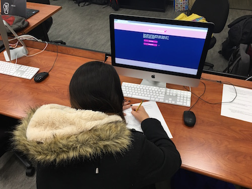
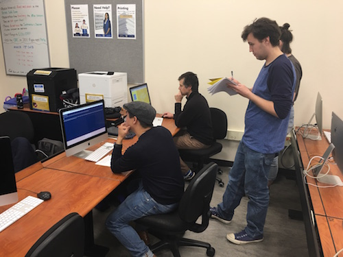

Target Audience Test: Sound Feels 💕
Overview:
For the target audience test, we had the privilege of having two really great user-testers. Both of our testers used the website in different ways and had different experiences. However, there were a couple of similarities between both of our participants.
First, the first place they navigated to on our website was the “Listen & Learn” page. They said that this was because this was the first button, so they believed it was where they were supposed to navigate to first. This made logical sense, because
you would want to learn about the topic before you participate and play the games. Secondly, they both used the back button in the browser to navigate back and forth. Finally, both users enjoyed our website and wanted to experience it more, but
certain sections have not been built yet.
User 1:

The feedback that User 1 provided included:
- Add the navigational buttons for the other sound colors on each of the color overlays.
- The typography is hard to read, particularly the body type.
- Add hover effect to the button to make it clearer to the user that it is clickable.
- People are used to the music app on the phones, on the “Listen & Learn” page make the audio controls similar so that the user already knows what to do when they encounter the play button.
User 2:

The feedback that User 2 provided included:
- Your website appears to incorporate the idea of an Envelope of Sound, you may want to define and discuss some of the sound terminology for the users.
- His mouse did not go below the page break of the footer.
- Make the navigational buttons more noticeable. This includes the footer and the header home button.
Take-away from the User Tests:
In order to improve the current prototype, I plan to make the following changes:
- In order to improve the navigation and reduce the amount of time a user clicks the back arrow to navigate while n the “Listen & Learn” section, I will add the navigational color buttons for the other sound colors to each of the overlays.
- Find another typeface to make the body copy more legible and readable for the user in order to make the information clearer and ultimately more understandable.
- Create different hover effects for the buttons, so that a user can understand what is and isn’t clickable.
- Add terminology for the user so they can have a deeper understanding of sound and ultimately a more fun and enjoyable experience when they visit our website.